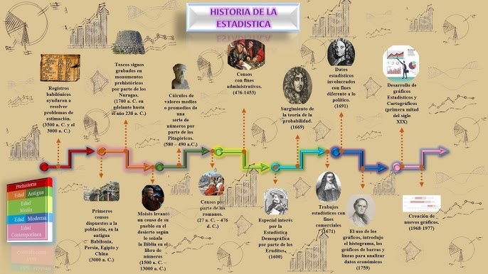

ipak <-function(pkg){# Definir repositorio CRAN (evita el error del mirror)options(repos =c(CRAN ="https://cloud.r-project.org"))# Identificar paquetes instalados installed <-rownames(installed.packages())# Identificar paquetes faltantes new.pkg <-setdiff(pkg, installed)# Instalar paquetes faltantesif(length(new.pkg) >0){install.packages(new.pkg, dependencies =TRUE) }# Cargar paquetes sin mostrar mensajesinvisible(lapply(pkg, function(p){suppressPackageStartupMessages(library(p, character.only =TRUE) ) }))}# Crear la lista de los paquetes a utilizarpackages <-c("tidyverse", "kableExtra", "psych", "readxl")# Instalar y cargar los paquetes del listado anterioripak(packages)
2 Historia De Le Estadistíca
La Historia de la Estadística es el desarrollo de los métodos para recolectar, organizar, analizar e interpretar datos con el fin de tomar decisiones y comprender fenómenos sociales, económicos y científicos.
Origen de la Estadística
La palabra “estadística” proviene del término alemán Statistik, relacionado con el estudio del Estado. Desde la antigüedad, los gobiernos necesitaban contar personas, animales, tierras y riquezas para cobrar impuestos, organizar ejércitos y administrar recursos.
Antigüedad
En Egipto se realizaban censos para construir pirámides y recaudar impuestos.
En China y Roma también se hacían registros de población y propiedades.
Los romanos utilizaron censos periódicos para fines militares y administrativos.
Desarrollo en la Edad Media
Durante la Edad Media, la recopilación de datos continuó principalmente para fines tributarios y religiosos. Los reinos europeos llevaban registros de nacimientos, matrimonios y defunciones.
Estadística Moderna
Siglo XVII
En este período comenzaron los primeros estudios científicos sobre datos:
John Graunt analizó registros de mortalidad en Londres y es considerado uno de los padres de la estadística.
Blaise Pascal y Pierre de Fermat desarrollaron la teoría de la probabilidad.
Siglo XVIII
La estadística empezó a utilizarse para estudiar fenómenos económicos y sociales. Los gobiernos europeos mejoraron los censos y registros poblacionales.
Siglo XIX
La estadística avanzó gracias a las matemáticas:
Carl Friedrich Gauss desarrolló métodos relacionados con la distribución normal.
Adolphe Quetelet aplicó la estadística al estudio de la sociedad.
Estadística en el Siglo XX
La estadística se convirtió en una herramienta fundamental en:
Medicina
Economía
Psicología
Ingeniería
Ciencias sociales
Destacan científicos como:
Ronald Fisher, quien desarrolló técnicas modernas de inferencia estadística y diseño experimental.
Karl Pearson, creador de importantes métodos de correlación y análisis.
Estadística Actual
Hoy la estadística es esencial en:
Inteligencia artificial
Big Data
Investigación científica
Empresas y mercados
Predicciones económicas y climáticas
Gracias a las computadoras y al análisis de grandes cantidades de datos, la estadística tiene aplicaciones en casi todas las áreas del conocimiento.
Importancia de la Estadística
La estadística permite:
Tomar decisiones informadas
Analizar información
Realizar predicciones
Comprender fenómenos sociales y naturales
Mejorar procesos científicos y empresariales

3 Variables
Concepto de Variable Estadística
En estadística, una variable es una característica, propiedad o atributo que puede tomar diferentes valores dentro de una población o muestra.
Las variables permiten recolectar, organizar y analizar información para apoyar la toma de decisiones.
En la administración pública, las variables se utilizan para:
medir indicadores sociales,
evaluar políticas públicas,
analizar presupuestos,
estudiar necesidades ciudadanas,
controlar gestión institucional.
Ejemplos en administración pública
Nivel de satisfacción ciudadana.
Número de beneficiarios de un programa social.
Tiempo de atención en una alcaldía.
Presupuesto ejecutado.
Nivel educativo de la población.
Clasificación de las Variables Según su Naturaleza
Las variables se clasifican en:
A. Variables Cualitativas
Describen cualidades, categorías o atributos. No se expresan numéricamente como cantidades matemáticas.
Tipos de variables cualitativas
a) Nominales
Las categorías no tienen orden.
Ejemplos en administración pública
Tipo de servicio público recibido:
salud
educación
seguridad
transporte
Estado civil de funcionarios públicos.
Departamento o municipio de residencia.
b) Ordinales
Las categorías tienen un orden o jerarquía.
Ejemplos
Nivel de satisfacción ciudadana:
muy satisfecho
satisfecho
regular
insatisfecho
Clasificación de desempeño laboral:
excelente
bueno
regular
deficiente
B. Variables Cuantitativas
Representan cantidades numéricas y permiten operaciones matemáticas.
Tipos de variables cuantitativas
a) Discretas
Toman valores enteros y generalmente provienen de conteos.
Ejemplos
Número de empleados públicos.
Cantidad de subsidios otorgados.
Número de denuncias ciudadanas.
Cantidad de hospitales públicos.
b) Continuas
Pueden tomar cualquier valor dentro de un intervalo.
Ejemplos
Tiempo de espera en atención ciudadana.
Porcentaje de ejecución presupuestal.
Ingreso promedio de hogares.
Distancia recorrida por vehículos oficiales.
Escalas de Medición de las Variables
Las escalas de medición indican cómo se pueden interpretar y analizar los datos.
A. Escala Nominal
Características
Clasifica en categorías.
No existe orden entre categorías.
Ejemplos en administración pública
Variable
Categorías
Tipo de contrato
Planta, provisional, prestación de servicios
Género
Masculino, femenino, otro
Tipo de entidad
Nacional, departamental, municipal
Operaciones permitidas
Conteo
Frecuencias
Porcentajes
B. Escala Ordinal
Características
Existe orden entre categorías.
No se puede medir exactamente la distancia entre categorías.
Ejemplos
Variable
Categorías
Nivel de satisfacción
Bajo, medio, alto
Prioridad de proyectos
Alta, media, baja
Nivel socioeconómico
1, 2, 3, 4, 5, 6
Operaciones permitidas
Ordenamiento
Comparaciones
Medianas
Percentiles
C. Escala de Intervalo
Características
Los valores tienen intervalos iguales.
No existe cero absoluto.
Ejemplos
Variable
Ejemplo
Temperatura ambiental
20°C, 25°C
Año de ejecución presupuestal
2020, 2021, 2022
Operaciones permitidas
Suma
Resta
Promedios
Limitación
No tiene sentido afirmar:
“40°C es el doble de 20°C”.
D. Escala de Razón
Características
Tiene cero absoluto.
Permite todas las operaciones matemáticas.
Ejemplos en administración pública
Variable
Ejemplo
Salario de funcionarios
$2.000.000
Número de ciudadanos atendidos
500 personas
Presupuesto municipal
$10.000 millones
Tiempo de atención
15 minutos
Operaciones permitidas
Suma
Resta
Multiplicación
División
Razones y proporciones
Resumen General
Clasificación
Tipo
Característica
Ejemplo Administración Pública
Cualitativa
Nominal
Sin orden
Tipo de servicio público
Cualitativa
Ordinal
Con orden
Nivel de satisfacción
Cuantitativa
Discreta
Conteos enteros
Número de funcionarios
Cuantitativa
Continua
Valores infinitos
Tiempo de atención
Importancia de las Variables en la Administración Pública
Las variables permiten:
CONCEPTO
Diseñar políticas públicas basadas en evidencia.
Medir eficiencia institucional.
Evaluar impacto social.
Elaborar indicadores de gestión.
Mejorar la transparencia y el control gubernamental.
Realizar análisis estadísticos para la toma de decisiones.
Ejemplo Integrador
Estudio: Calidad del Servicio en una Alcaldía
Variable
Tipo
Escala
Edad del ciudadano
Cuantitativa continua
Razón
Número de trámites realizados
Cuantitativa discreta
Razón
Nivel de satisfacción
Cualitativa ordinal
Ordinal
Tipo de trámite
Cualitativa nominal
Nominal
Tiempo de atención
Cuantitativa continua
Razón
4 Clasificación De Variables
diccionario_variables <- data.frame( Variable = c( “Calidad del servicio público”, “Cantidad de energía consumida”, “Cantidad de recursos naturales consumidos”, “Categoría de proyecto”, “Clasificación de entidad pública”, “Complejidad de los trámites”, “Crecimiento económico anual”, “Departamento de trabajo”, “Gastos operativos mensuales”, “Grado de cumplimiento de las regulaciones”, “Grado de innovación en políticas”, “Grado de satisfacción de los ciudadanos”, “Índice de pobreza”, “Índice de satisfacción ciudadana”, “Modalidad de adjudicación”, “Nivel de acceso a servicios públicos”, “Nivel de deuda pública”, “Nivel de experiencia del personal”, “Nivel de riesgo de proyectos”, “Nivel de urgencia de las solicitudes”, “Actas levantadas”, “Número de auditorías internas”, “Número de comisiones creadas”, “Número de contratos adjudicados”, “Número de días de trabajo perdidos por huelga”, “Número de empleados en una oficina”, “Número de expedientes archivados”, “Número de inspecciones realizadas”, “Número de licencias emitidas”, “Número de propuestas recibidas”, “Número de proyectos completados”, “Número de quejas recibidas”, “Número de reuniones realizadas”, “Número de sanciones impuestas”, “Número de solicitudes de información”, “Porcentaje de cumplimiento de metas”, “Porcentaje de inversión en infraestructura”, “Presupuesto anual asignado”, “Prioridad de los proyectos”, “Régimen de seguridad social”, “Salario promedio de los empleados”, “Sector gubernamental”, “Tasa de criminalidad por 1000 habitantes”, “Tasa de desempleo en la región”, “Tasa de rotación de personal”, “Tiempo promedio de respuesta a solicitudes”, “Tipo de ciudadano atendido”, “Tipo de contrato”, “Tipo de documentación”, “Tipo de servicio público” ), Tipo = c( “Ordinal”, “Continua”, “Continua”, “Nominal”, “Nominal”, “Ordinal”, “Continua”, “Nominal”, “Continua”, “Ordinal”, “Ordinal”, “Ordinal”, “Continua”, “Continua”, “Nominal”, “Ordinal”, “Continua”, “Ordinal”, “Ordinal”, “Ordinal”, “Discreta”, “Discreta”, “Discreta”, “Discreta”, “Discreta”, “Discreta”, “Discreta”, “Discreta”, “Discreta”, “Discreta”, “Discreta”, “Discreta”, “Discreta”, “Discreta”, “Discreta”, “Continua”, “Continua”, “Continua”, “Ordinal”, “Nominal”, “Continua”, “Nominal”, “Continua”, “Continua”, “Continua”, “Continua”, “Nominal”, “Nominal”, “Nominal”, “Nominal” ) )